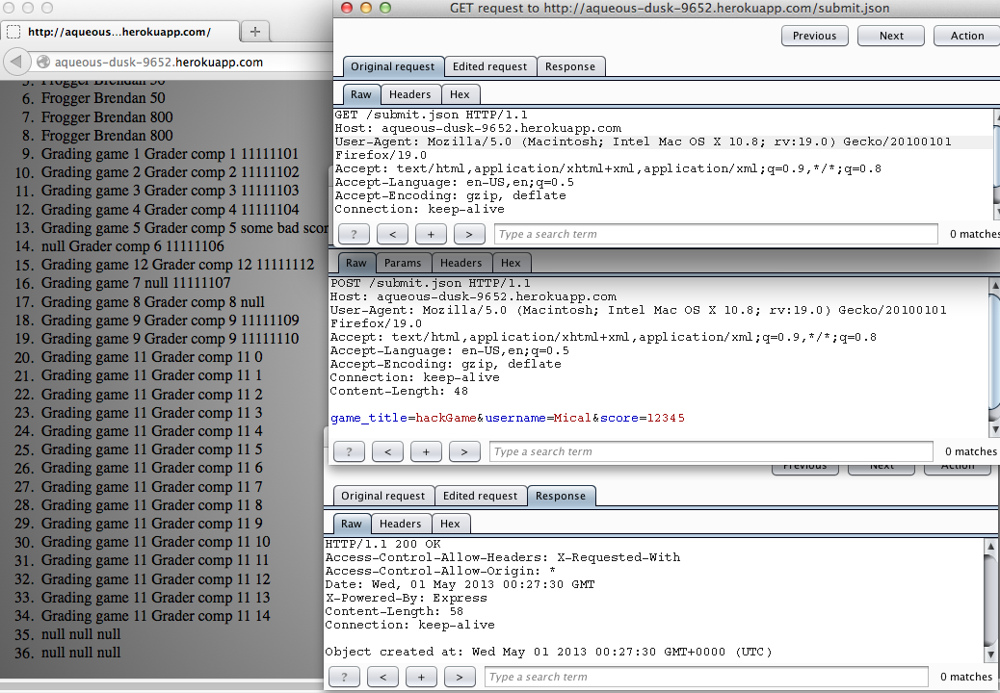
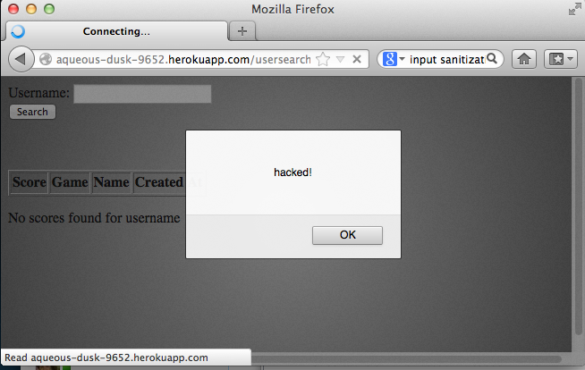

Security Assessment Report
ScoreCenter
Introduction
The web application in question, ScoreCenter, was developed to maintain high scores for HTML5 games. The application is meant to allow any HTML5 game on any web domain to send high scores consisting of the game title, player name, and score. The application takes this information and performs various functions with it. The application can display all received scores in the order of submission; it can display the top 10 scores in descending order for a specified game; and it can display a list of all the high scores for all games played by the same specified username.
We have been consulted to perform a security assessment on the potentially vulnerable web application, ScoreCenter. This is especially important for the growth and integrity of the product and its success in terms of its popularity among online HTML5 games. Listed below are the security vulnerabilities found, documented, and resolved in ScoreCenter.
Methodology
The ScoreCenter application has been launched at http://aqueous-dusk-9652.herokuapp.com/, and the source code for the application was provided for the purposes of debugging.
To test the application, each of the communication processes available was tested, including score sending, username search, and game-associated highscore search. The application was submitted to basic attacks, such as uploading malicious files, updating database structure or accessing sensitive database information. We then analyzed the source code to further uncover other potential security leaks, and tested our hypotheses by again attempting attacks as a user.
The Burp Suite Proxy was used to perform Man-In-The-Middle-like attacks. The Burp Proxy operates as a web proxy server, and sits as a man-in-the-middle between your browser and destination web servers. This lets you intercept, inspect and modify the raw traffic passing in both directions. If the application employs HTTPS, Burp breaks the SSL connection between your browser and the server, so that even encrypted data can be viewed and modified within the Proxy.
Abstract of Findings
There are several security leaks and opportunities for malicious attacks on the ScoreCenter application. The major problems found are listed below:
- It is incredibly simple to intercept and alter the content of data being sent to the server, with no response or monitoring on the server-side.
- It is also very easy to exploit the Cross Origin Resource Sharing capabilities of the site to compromise user data.
- Any message can be posted or injected, including potentially malicious executable scripts, unbeknownst to the user.
- Any message sent to other users can contain malicious scripts. A message can contain javascript, which will be rendered on the page of the employee who receives the message or the link that includes the query form defined by the attacker. This can take the form of annoying pop-ups, auto-redirect scripts, or even more harmful options.
Issues Found
- Vulnerable to "Man-in-the-Middle"-like Attack
- Location: /submit.json
- Severity: HIGH - Anyone armed with an intercepting proxy can alter the values of submitted high scores, undermining the integrity of the app.
- Description: Burp Proxy, previously described in detail as a
tool that can be used to intercept and modify HTTP traffic passing in both directions
between the client and server, was used to modify values in-transit (see picture below).
This revealed vulnerability not only opens the door to malicious content being posted
and/or executed, but generally undermines the integrity of the app as one that can
securely and reliably post high scores for outside games.
 - Resolution: In this scenario, attackers would have bypassed any client-side checks by modifying values after the checks have been performed, and then these modified values would be submitted to the server. Thus the solution should be to validate user input on the server side.
- Vulnerability to Cross-Site Request Forgery (CSRF)
- Location: /submit.json, /, /usersearch, /highscores.json
- Severity: HIGH - An attacker may force the users of a web application to execute actions of the attacker's choosing; furthermore, a successful CSRF exploit can compromise end user data, or even the entire web application, if the targeted end user is the administrator account.
- Description: CSRF is an attack that tricks the victim into loading a page that contains a malicious request, inheriting the identity and privileges of the victim to perform an undesired function on the victim's behalf. In the case of ScoreCenter, someone could exploit this web application vulnerability to submit false scores.
- Resolution: Implement a synchronizer token pattern - i.e., generate random tokens that are associated with the user's current session which will be inserted within the HTML forms and links associated with sensitive server-side operations.
- Vulnerability to Non-Persistent Cross Site Scripting (XSS)
- Location: /usersearch
- Severity: MEDIUM - Can result in: all users being presented with fraudulent web content, stolen cookie information, malicious code injection, or annoying pop-up messages. However, in this scenario, it is believed that the only type of XSS possible is non-persistent, which is less destructive than persistent XSS, in which the data provided by the attacker is permanently displayed on "normal" pages returned to other users in the course of regular browsing. Hence, the level of severity is limited to medium.
- Description: XSS attacks are conducted where user input,
most commonly in HTTP query parameters or in HTML form submissions, is used immediately
by server-side scripts to parse and display a page of
results for and to that user, without properly sanitizing the request. Because HTML
documents have a flat, serial structure that mixes control statements, formatting, and
the actual content, any non-validated user-supplied data included in the resulting page
without proper HTML encoding, may lead to markup injection. A reflected attack is
typically delivered via email or a neutral web site. The bait is an innocent-looking URL,
pointing to a trusted site but containing the XSS vector. If the trusted site is
vulnerable to the vector, clicking the link can cause the victim's browser to execute
the injected script. In ScoreCenter, ./usersearch was found to be particularly vulernable
to such a manipulation. Sending someone the following URL is a very non-extreme example
of what possible attacks can be executed: http://aqueous-dusk-9652.herokuapp.com/usersearch?username=<script>alert('hacked!')</script>
 - Resolution: Cross-site scripting can be prevented by encoding output based on input parameters, filtering input parameters for special characters, and filtering output based on input parameters for special characters, to name a few ideas.
Conclusion
ScoreCenter currently contains many security vulnerabilities, putting users at risk for annoying hackers to mess up their awesome, well-deserved high scores. Based on the number of changes that need to be made, it is recommended that you hire us immediately to repair the site. The design of the site is quite good, and therefore these items should be kept. For approximately $20, most Web Dev students could and would fix many of the security leaks on ScoreCenter.